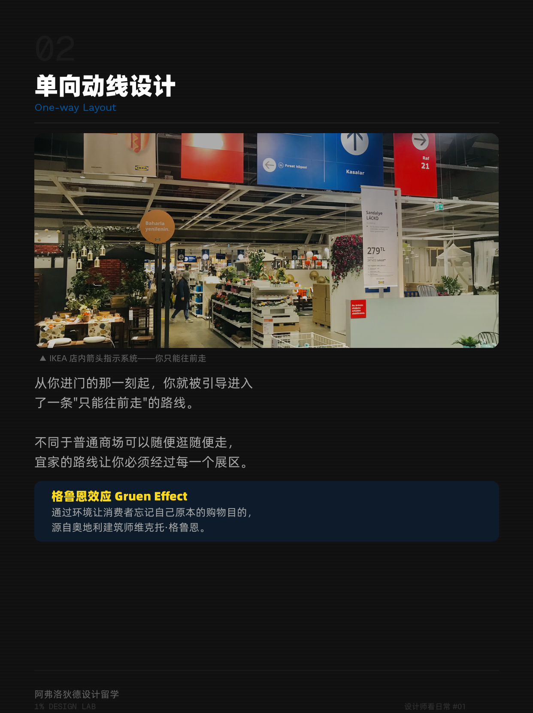
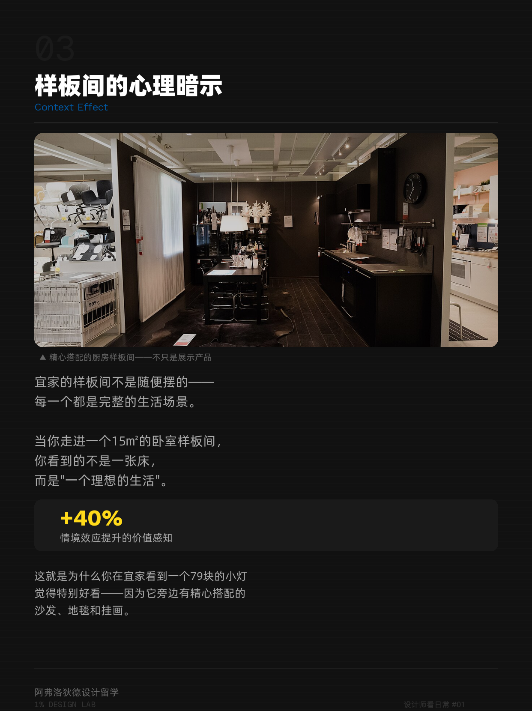
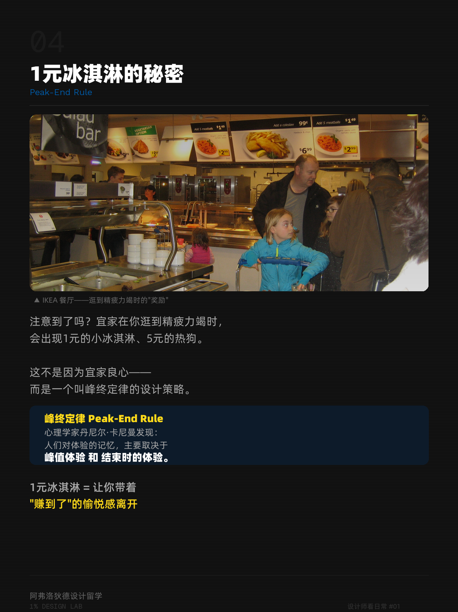

每次去宜家，是不是都有同一个剧本：本来只想买个杯子，出来的时候花了俩小时，还多掏了五百块。
我以前讲过这个话题，标题特别狠——「宜家的路线设计，让你多逛了 3 倍时间」。可这次认真重写，我盯着那个「3 倍」看了半天，问自己：这个数，哪来的？
答不上来。
所以这篇我想换个讲法。宜家的动线确实值得拆，它是空间设计里的经典教材。但我想把那些听着很专业的数字，一个一个重新审一遍——能查的查，查不到的老实说。
别急着问「宜家怎么套路你」。先问：它到底用空间，替你做了多少个你以为是「自己决定」的选择？
一、单向动线——你以为在随便逛，其实在走一条单行道
宜家最核心的一招，叫单向动线（One-way Layout）。从你踏上那条斜坡式的入口起，路线基本就定死了：地上的箭头指着往前，你想回头都费劲。每一个展区，你「必须」经过。
这个思路的鼻祖，常被追溯到一位奥地利建筑师 Victor Gruen。他最早构想那种全封闭、没有窗户、把街区和时间都隔在外面的购物中心——后来人们管这类「让人忘记原本目的」的效应叫「格鲁恩效应」（Gruen Effect）。Gruen 这个人是真的，这套概念也是真的。
但要泼盆冷水：宜家是不是「刻意照着格鲁恩效应设计」、这套设计到底能量化成多少「迷失比例」，我没见过靠谱的测量。单向动线真正能解释的，是一件朴素得多的事——它最大化了每一件商品的曝光。你绕一圈，几乎所有东西都从你眼前过了一遍。这不需要心理学大词，这是货架效率。

二、样板间卖的不是家具，是「一种生活」
你在宜家看到的样板间，从来不是随便摆的——每一间都是一个完整的生活场景。十五平米的「卧室」，配好床头灯、地毯、挂画，连书桌上放本什么书都替你想好了。
我原稿里写过「情境效应让你的价值感知提升 40% 以上」。这次我去查：40% 这个数，找不到对应的一手实验。所以我删了它。但方向我仍然信——把一件东西放进它该出现的场景里，你对它的好感确实会涨。一支单看平平无奇的台灯，搁在精心搭配的卧室里，就显出「我也想要这种生活」的味道。
这招数字产品里也用烂了：卖软件不卖功能清单，卖「用了它之后的那个你」。SaaS 的着陆页给你看的不是一堆按钮，是一张干干净净、仿佛所有问题都被解决之后的工作台截图。一模一样的逻辑。


三、1 块钱的冰淇淋——卡尼曼的「峰终定律」
逛到快散架的时候，你会撞见宜家那个 1 块钱的冰淇淋、几块钱的热狗。这不是宜家心善。
这是峰终定律（Peak-End Rule）。心理学家丹尼尔·卡尼曼发现：人们对一段体验的记忆，主要被两个点决定——体验里的峰值（最好或最坏的一刻），和结束时的感受。中间拖了多久、累不累，反而记得最模糊。
卡尼曼是拿过诺贝尔经济学奖的，峰终定律是他被引用最多的工作之一，可信度没问题。宜家在终点放一个便宜到离谱的冰淇淋，等于人为给你造一个「愉悦的结尾」——你回家以后，记不清走了多少公里，只记得出门时嘴里那口甜。
说句实话：峰终定律本身是真实研究，但「因此宜家多赚多少」「每个人都会被影响」这类推论，是大家的延伸解读，不是实验原话。别把营销案例，当成定律本身。
峰终定律告诉你：用户离开你产品时的最后那一下，格外地决定他对你的整体印象。所以——别在结账、退订、退出这种地方偷懒。
四、又高又满的自提区——「多」就是「便宜」
等你终于逛完展区，下楼到了自提区，货架高得要仰脖子，同一样东西一摞一摞堆到顶。
这是仓储式陈列——故意把库存堆出来给你看。它的潜台词是：「这么多，肯定便宜。」Costco 用的是同一套逻辑。
人对「划算」的判断，很受视觉密度影响：满坑满谷的堆头，会让人下意识压低自己对单价的预期。这招不需要数字也能讲明白，它就是一个被反复验证的视觉暗示。
五、那条故意不显眼的快捷通道
很多人不知道，宜家其实有快捷通道，可以跳过展区直达仓库和收银。但它的标识，做得相当不显眼。
为什么？因为让你「一不小心多逛几个区」才是目的，让你「快速买到就走」不是。这套系统不是在骗你——它从头到尾都给你留了出口，只是把出口的亮度，调得很低。
一条单向动线，其实同时在回答四个人的问题
- 顾客
- 我想逛得有收获，又不想迷路。→ 给你一条清晰的路，但路上全是诱惑。
- 商品
- 我怎样才能被看见？→ 全部摊在你必经的路线上。
- 员工
- 我怎么高效补货、引导客流？→ 动线统一，动线本身就是管理工具。
- 经营
- 怎么把「只想买杯子」的人，变成「顺手买了五百块」的人？→ 在他的路上，放满他没打算买的东西。
我把这套逻辑搬回了数字产品
做产品的人逛宜家，最该偷的不是它的地毯，是它对「路径」的理解。
- 路径即展示：你的新手引导，是不是把核心价值一个个摆在了用户必经的路上？还是把好东西埋在三层菜单底下？
- 场景化呈现：你是在卖功能，还是在卖「用了之后的那个场景」？
- 给一个好的结尾：用户完成关键任务的最后一步，你是不是给他留了一个「愉悦的峰终」？
但我也想给自己提个醒——宜家做的是零售，零售的终极指标就是让你多买。可如果你做的是效率工具，照搬「让人多逛」就是犯罪。工具该做的，是让人赶紧办完、赶紧走人，走的时候还念你一句好。把零售的逻辑无脑搬进工具，是我见过最多的设计误用。
下次逛宜家，给自己三个观察
- 数分叉：你走的这条路上，有几次「真的可以拐走」的出口？宜家把它们藏在哪了？
- 看结尾：你出门前最后一次掏钱的，是那个 1 块钱的冰淇淋，还是一件你本来没想买的东西？
- 找场景：你最终掏钱的，有几件是被「样板间那个生活场景」说动的，而不是真的需要？
- 宜家动线作为空间设计案例的分析，属于设计领域的公开讨论。Victor Gruen 与「格鲁恩效应」、丹尼尔·卡尼曼的「峰终定律」均为可查证的真实人物与理论。
- 但原稿中的「多逛 3 倍时间」「价值感知提升 40% 以上」「购买概率提升 15%」等精确数字，我未能追溯至一手实验，已在文中删除或标注存疑。
- 本文基于公开可见的宜家门店布局做设计与行为分析，不代表宜家官方设计意图。